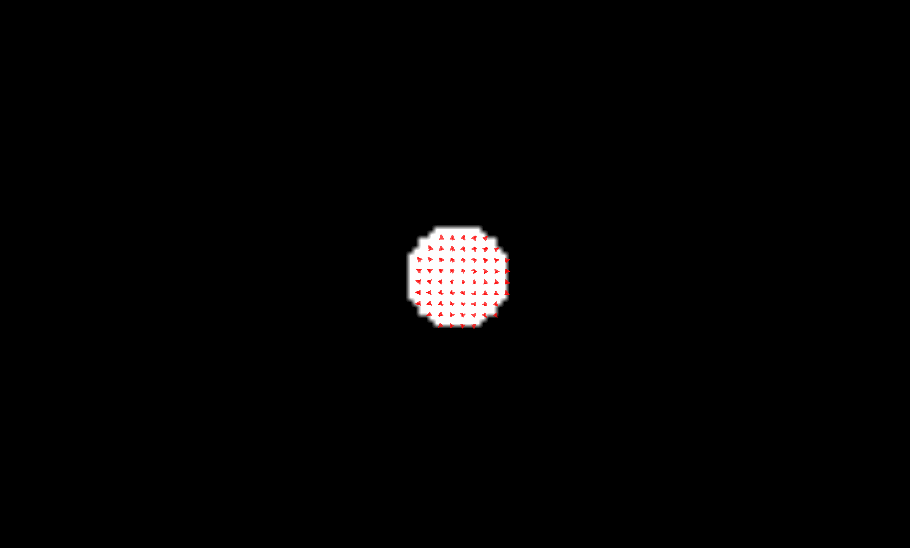
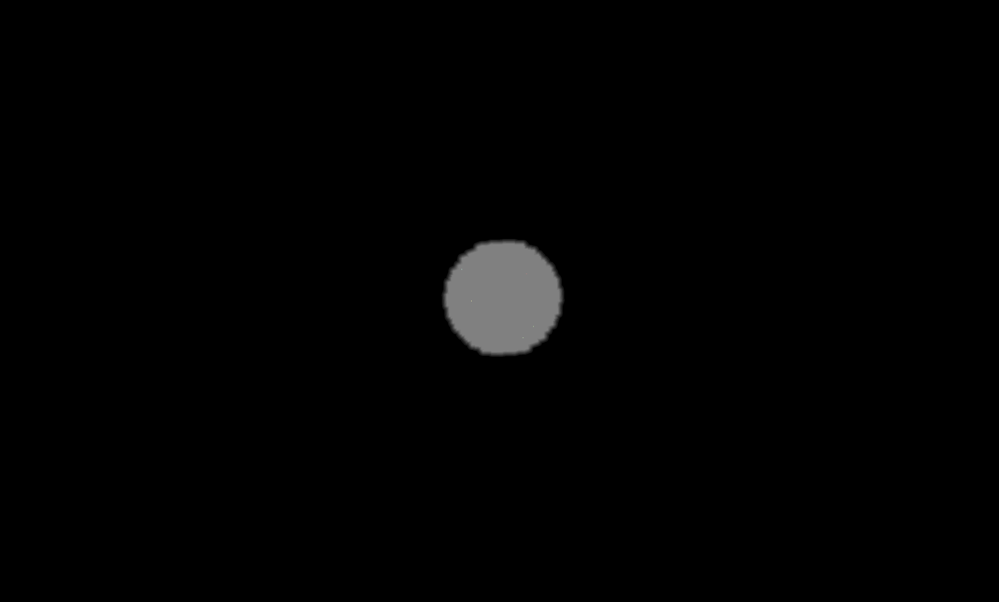

Non-linear registration of growing spheres¶
This notebook demonstrates how to create, visualize, and rigid register a dataset of growing spherical images using the registration_tools package.
Index¶
Import the corresponding libraries¶
import os
import napari
import registration_tools as rt #Main package
import registration_tools.data as rt_data #For generating artificial datasets
import registration_tools.visualization as rt_vis #For visualization
import registration_tools.registration as rt_reg #For registration
import registration_tools.utils as rt_utils #Other utility functions
Create an artificial dataset of growing spherical images¶
We will create a dataset of 10 growing spherical images with 3 channels.
# Create a dataset of growing spherical images
dataset = rt_data.sphere(
num_images=10,
image_size=100,
num_channels=1,
min_radius=10,
max_radius=20,
jump=0,
stride=(1, 1, 1),
decay_factor=0,
)
Visualizing¶
Initialize the napari viewer to visualize the dataset.
# Initialize the napari viewer
viewer = napari.Viewer()
and load the dataset to napari,
# Plot the images in the dataset
viewer.layers.clear() #Clear the viewer of other layers that may be present
rt_vis.add_image(viewer, dataset)
viewer.dims.ndisplay = 3
Make video¶
Create a video from the images in the dataset.
# Make video
rt_vis.make_video(
viewer=viewer,
save_file='sphere_growing_dataset.gif',
fps=1,
)
Register the images¶
Register the images in the dataset to correct for any misalignments.
# Register the video
registration = rt_reg.Registration(
pyramid_highest_level=5,
pyramid_lowest_level=0,
registration_type='vectorfield',
registration_direction='forward',
)
registration.fit(
dataset,
use_channel=0,
)
Registering images using channel 0: 100%|██████████| 9/9 [00:23<00:00, 2.65s/]
Plot the vector field and make videos¶
Now we can check the deformation field by plotting the vectorfield along with the images to see the deformation.
In order to represent the vectorfield around the region of interest, we will provide a mask around the ball. We provide handy functions to process in batch large datasets without loading all in memory.
mask = rt_utils.apply_function_in_time(dataset, lambda x: x[0] > 0, new_axis="TXYZ")
Applying function: 100%|██████████| 10/10 [00:00<00:00, 93.09it/s]
With the mask computed, we can compute the compute the vectorfield.
Note The vectorfield returned has the shape of Napari vectors (vectors x (point,$\Delta$point) x (t,spatial)) and is already in physical units.
vect = registration.vectorfield(
mask, #mask
n_points=50 #n of points per dimension to plot the vectorfield
)
Computing vectorfield: 100%|██████████| 9/9 [00:02<00:00, 4.26/s]
Finally we add it to the viewer,
viewer.layers.clear() # Clear the viewer from other images
rt_vis.add_image(viewer, dataset, name="dataset", channel_axis=1)
viewer.add_vectors(vect)
viewer.dims.ndisplay = 3
and make a video.
rt_vis.make_video(
viewer=viewer,
save_file='sphere_registered_vectorfield.gif',
fps=1,
)

Plot the trajectories¶
Alternatively to the vectorfield between time points, you can also integrate a set of points over all the transformations to have an idea of the trajectories of the flow over longer times.
For that we just need a mask in one single time point. Since the vectorfield we compute it forward, it makes sense that we pass the pask of the first time point.
#Mask of just initial time point
mask = dataset[0][0] > 0 #[time][channel]
And with the mask, we compute the tracks.
tracks = registration.trajectories(mask, n_points=50, axis="XYZ", scale=dataset.attrs["scale"])
Computing trajectories: 100%|██████████| 9/9 [00:00<00:00, 14.98/s]
Finally, we upload the images in napari,
viewer.layers.clear() # Clear the viewer from other images
rt_vis.add_image(viewer, dataset, name="dataset", channel_axis=1, opacity=0.5)
viewer.add_tracks(tracks)
viewer.dims.ndisplay = 3
viewer.camera.angles = (-0.5812613950187316, 21.01903309215726, -7.504582808602566) # Set camera angles to make the video look better
and make the video
rt_vis.make_video(
viewer=viewer,
save_file='sphere_registered_trajectories.gif',
fps=1,
)
